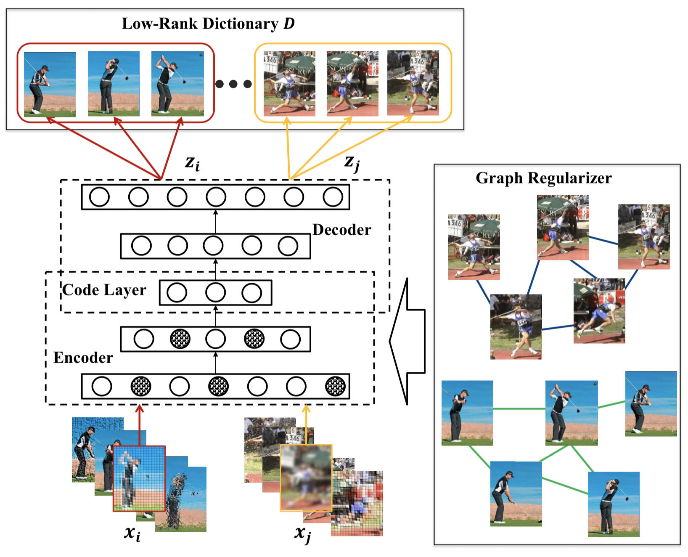

Transfer Learning Transfer Learning
|
Missing Modality Transfer Learning
[Introduction]
Transfer learning is usually exploited to leverage previously well-learned source domain for evaluating the unknown target domain; however, it may fail if no target data are available in the training stage. This problem arises when the data are multi-modal. For example, the target domain is in one modality while the source domain is in another. To overcome this, we first borrow an auxiliary database with complete modalities, then consider knowledge transfer across databases and across modalities within databases simultaneously in a single framework. The contributions are threefold: 1) a latent factor is introduced to uncover the underlying structure of the missing modality from the known data; 2) transfer learning in two directions allows the data alignment between both modalities and databases, giving rise to a very promising recovery; 3) an efficient solution with theoretical guarantees to the proposed latent low-rank transfer learning algorithm.
[Related Work]
1. Zhengming Ding, Ming Shao, and Yun Fu. Missing Modality Transfer Learning via Latent Low-Rank Constraint. IEEE Transactions on Image Processing (TIP), vol. 24, no. 11, pp. 4322-4334, 2015.
2. Zhengming Ding, Ming Shao and Yun Fu. Latent Low-Rank Transfer Subspace Learning for Missing Modality Recognition. Twenty-Eighth AAAI Conference on Artificial Intelligence (AAAI), 2014.
Incomplete Multi-Source Transfer Learning
[Introduction]
Transfer learning is generally exploited to adapt well-established source knowledge for learning tasks in weakly labeled or unlabeled target domain. Nowadays, it is common to see multiple sources available for knowledge transfer, each of which, however, may not include complete classes information of the target domain. Naively merging multiple sources together would lead to inferior results due to the large divergence among multiple sources. In this paper, we attempt to utilize incomplete multiple sources for effective knowledge transfer to facilitate the learning task in target domain. To this end, we propose an Incomplete Multi-source Transfer Learning (IMTL) through two directional knowledge transfer, i.e., cross-domain transfer from each source to target, and cross-source transfer. Specifically, in cross-domain direction, we deploy latent low-rank transfer learning guided by iterative structure learning to transfer knowledge from each single source to target domain. This practice reinforces to compensate for any missing data in each source by the complete target data. Whilst in cross-source direction, unsupervised manifold regularizer as well as effective multi-source alignment are explored to jointly compensate for missing data from one portion of source to another.
[Related Work]
Zhengming Ding, Ming Shao, and Yun Fu. Incomplete Multisource Transfer Learning. IEEE Transactions on Neural Networks and Learning Systems (TNNLS), vol. 29, no. 2, pp. 310-323, 2018.
|
| Multi-view Learning
|
Low-rank Common Subspace Learning
[Introduction]
Multi-view data are of great abundance in real-world applications, since various view-points and multiple sensors desire to represent the data in a better way. Conventional multi-view learning methods aimed to learn multiple view-specific transformations meanwhile assumed the view knowledge of training and test data were available in advance. However, they would fail when we do not have any prior knowledge for the probe data's view information, since the correct view-specific projections cannot be utilized to extract effective feature representations. In this paper, we develop a Collective Low-Rank Subspace (CLRS) algorithm to deal with this problem in multi-view data analysis. CLRS attempts to reduce the semantic gap across multiple views through seeking a view-free low-rank projection shared by multiple view-specific transformations. Moreover, we exploit low-rank reconstruction to build a bridge between the view-specific features and those view-free ones transformed with the collective low-rank subspace. Furthermore, a supervised cross-view regularizer is developed to couple the within-class data across different views to make the learned collective subspace more discriminative.
[Related Work]
1. Zhengming Ding, and Yun Fu. Robust Multi-view Data Analysis through Collective Low-Rank Subspace.
IEEE Transactions on Neural Networks and Learning Systems (TNNLS), vol. 29, no. 5, pp. 1986-1997, 2018.
2. Zhengming Ding, Yun Fu. Low-Rank Common Subspace for Multi-View Learning. IEEE International
Conference on Data Mining (ICDM), 2014.
|
| Robust Feature Learning
|
Deep Robust Encoder

[Introduction]
Deep learning has attracted increasing attentions recently due to its appealing performance in various tasks. As a principal way of deep feature learning, deep auto-encoder has been widely discussed in such problems as dimensionality reduction and model pre-training. Conventional auto-encoder and its variants usually involve additive noises (e.g., Gaussian, masking) for training data to learn robust features, which, however, did not consider the already corrupted data. In this paper, we propose a novel Deep Robust Encoder (DRE) through locality preserving low-rank dictionary to extract robust and discriminative features from corrupted data, where a low-rank dictionary and a regularized deep auto-encoder are jointly optimized. First, we propose a novel loss function in the output layer with a learned low-rank clean dictionary and corresponding weights with locality information, which ensures that the reconstruction is noise free. Second, discriminant graph regularizers that preserve the local geometric structure for the data are developed to guide the deep feature learning in each encoding layer.
[Related Work]
Zhengming Ding, Ming Shao and Yun Fu. Deep Robust Encoder through Locality Preserving Low-Rank Dictionary. European Conference on Computer Vision, (ECCV), 2016.
|
| Zero-Shot Learning
|
Generative Zero-Shot Learning
 [Introduction]
[Introduction]
Zero-shot learning for visual recognition, which approaches identifying unseen categories through a shared visual-semantic function learned on the seen categories and is expected to well adapt to unseen categories, has received considerable research attention most recently. However, the semantic gap between discriminant visual features and their underlying semantics is still the biggest obstacle, because there usually exists domain disparity across the seen and unseen classes. To deal with this challenge, we design two-stage generative adversarial networks to enhance the generalizability of semantic dictionary through low-rank embedding for zero-shot learning. In detail, we formulate a novel framework to simultaneously seek a two-stage generative model and a semantic dictionary to connect visual features with their semantics under a low-rank embedding. Our first-stage generative model is able to augment more semantic features for the unseen classes, which are then used to generate more discriminant visual features in the second stage, to expand the seen visual feature space. Therefore, we will be able to seek a better semantic dictionary to constitute the latent basis for the unseen classes based on the augmented semantic and visual data.
[Related Work]
1. Zhengming Ding, Ming Shao, and Yun Fu. Generative Zero-Shot Learning via Low-Rank Embedded Semantic Dictionary. IEEE Transactions on Pattern Analysis and Machine Intelligence (TPAMI), 2018.
2. Zhengming Ding, Ming Shao and Yun Fu. Low-Rank Embedded Ensemble Semantic Dictionary for Zero-Shot Learning. IEEE Conference on Computer Vision and Pattern Recognition (CVPR), 2017.
|
| One-Shot Learning
|
One-Shot Face Recognition
[Introduction]
One-shot face recognition measures the ability to recognize persons with only seeing them once, which is a hallmark of human visual intelligence. It is challenging for existing machine learning approaches to mimic this way, since limited data cannot well represent the data variance. To this end, we propose to build a large-scale face recognizer, which is capable to fight off the data imbalance difficulty. To seek a more effective general classifier, we develop a novel generative model attempting to synthesize meaningful data for one-shot classes by adapting the data variances from other normal classes. Specifically, we formulate conditional generative adversarial networks and the general Softmax classifier into a unified framework. Such a two-player minimax optimization can guide the generation of more effective data, which benefit the classifier learning for one-shot classes.
[Related Work]
1. Zhengming Ding, Yandong Guo, Lei Zhang, Yun Fu. One-Shot Face Recognition via Generative Learning, IEEE Conference on Automatic Face and Gesture Recognition (FG), 2018.
|
|